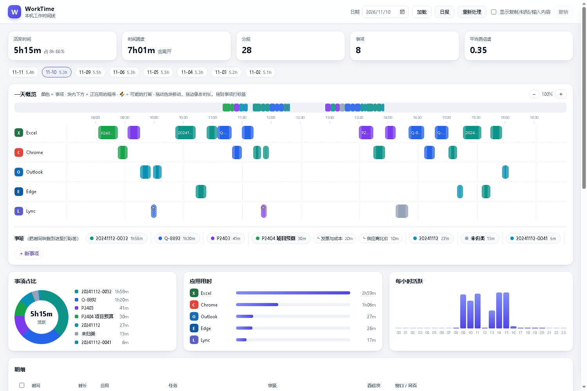
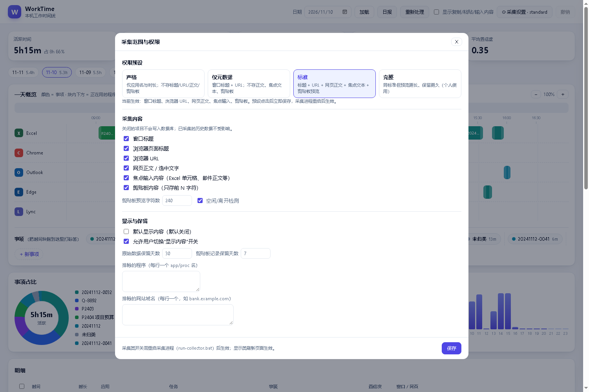
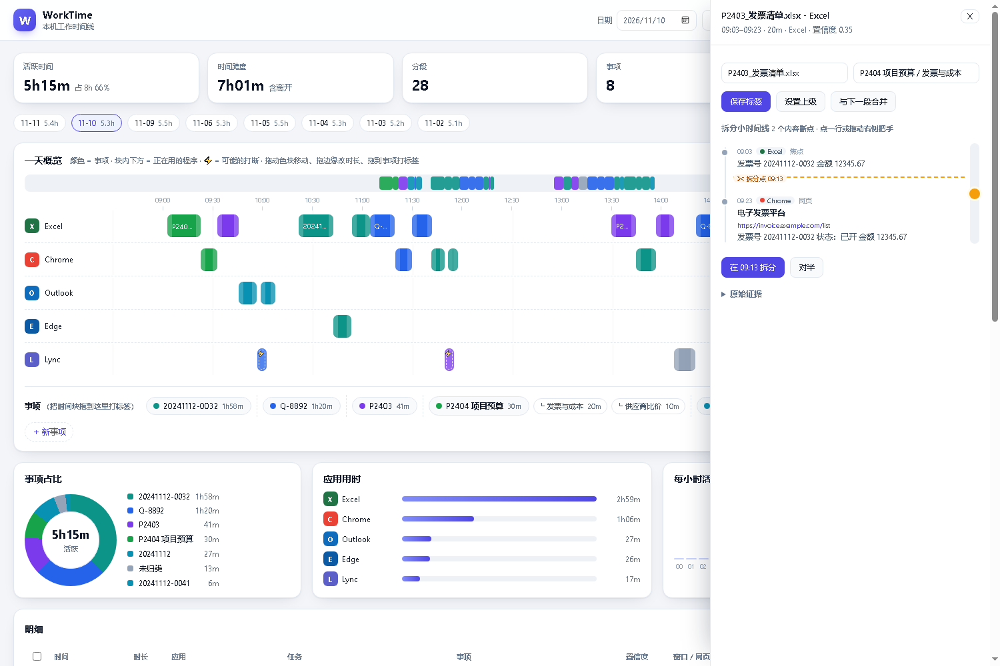

Open-source, local-first time tracking for Windows. It captures which app, page and text field you are actually using, turns the day into one timeline, and lets you drag pieces into projects and tasks. No cloud. No telemetry. No screenshots.

Not another timer you forget to start. A reviewable timeline of your real computer activity.
Apps, window titles, browser pages, clipboard copy/paste and focused UI text become one day-long timeline.
Move blocks, resize edges, drag a block onto a matter to tag it. Bulk-label selected ranges.
A 2-minute Lync message between two email-reading segments is flagged, so context switching is visible.
Web page text, focused input and clipboard snippets live in the drawer — hidden by default, never in exports.
Client / project / sub-task paths. Colors roll up to the top level, charts aggregate by parent.
Day/week/month/year views with KPI cards, matter donut, app bars and activity charts, plus downloadable Markdown. Optional local LLM naming for new kinds of work.
Portable. Works offline. Uninstalls by deleting a folder.
Foreground window, idle, clipboard hash/preview, focused text; the extension adds page context from Chrome/Edge.
Deterministic rules split the day; clustering plus aliases suggest tasks and matters. Optional local model names new clusters.
Drag, split, tag and confirm in the local review UI. Export Markdown/CSV/XLSX — raw content stays out.
Not every workplace allows the same data. Start from a preset, then tighten every channel.
policy.locked = true turns all switches
read-only for users; config stays local.
WorkTime has no account, no server, and no network calls beyond 127.0.0.1.

All screenshots use generated sample data — no real user content.
More in the repository README and docs.
No. There is no cloud component; the only network endpoints are localhost. You can run it fully offline.
No. It runs as a portable folder under your user profile and adds a per-user Startup shortcut.
Browsers do not expose the active page to native apps. The extension sends URL/title/visible text to 127.0.0.1 only, with a per-install token.
Yes, via Windows UI Automation focused-control text, when the app exposes it. You can toggle content display and keep it out of exports.
No. It is a personal work-review tool. If used at work, get IT approval and follow your company’s data policy.
The ZIP is not code-signed yet. Verify the SHA-256 in the release notes, or build from source.